This is my version of concept of overfitting using the Higher order linear regression. Let's begin with a breif description about Overfitting and Underfitting.
Overfitting: It is "the production of an analysis that corresponds too closely or exactly to a particular set of data, and may therefore fail to fit additional data or predict future observations reliably".An overfitted model is a statistical model that contains more parameters than can be justified by the data. The essence of overfitting is to have unknowingly extracted some of the residual variation (i.e., the noise) as if that variation represented underlying model structure.
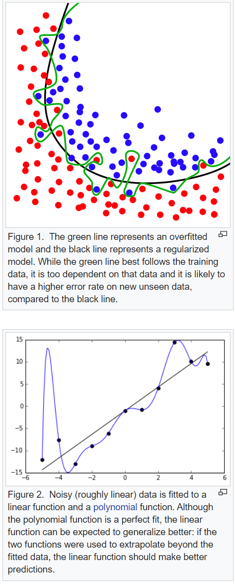Underfitting: Underfitting occurs when a statistical model cannot adequately capture the underlying structure of the data. An under-fitted model is a model where some parameters or terms that would appear in a correctly specified model are missing. Under-fitting would occur, for example, when fitting a linear model to non-linear data. Such a model will tend to have poor predictive performance.
Let's begin:
1. Let's import our packages.
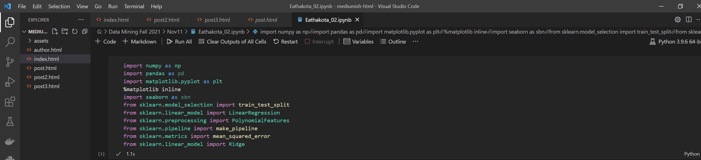Let's create 20 random uniform distributed values and then we will use sin function to predict. We will be working on [0, 1, 3, 9] order linear regression. Also, let's calculate our 'y':
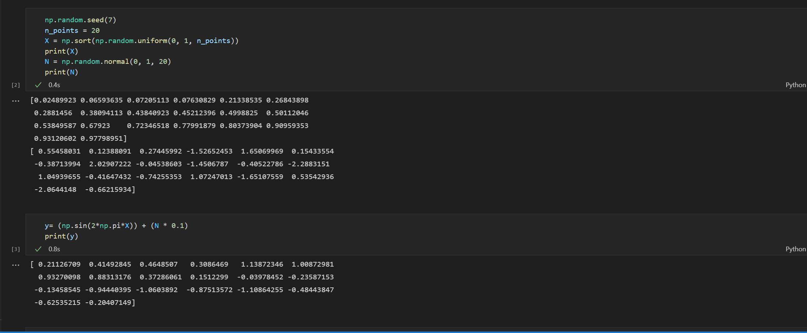Now let's split half the data to train and the other half to test. 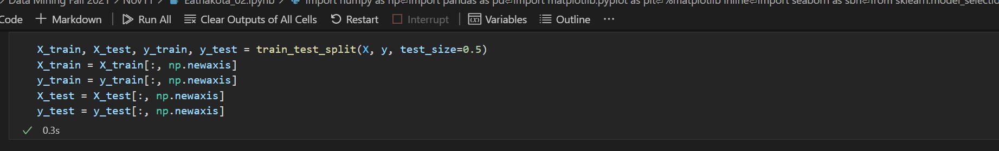
2. Now let's design our model and plot the graphs (Polynomial power: 0,3,6,9), while displaying their weights along side. 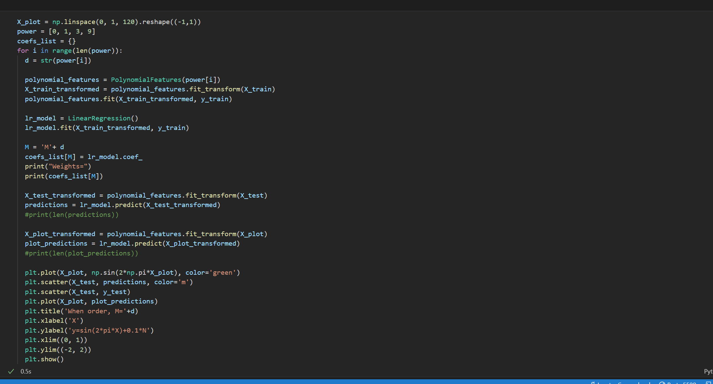 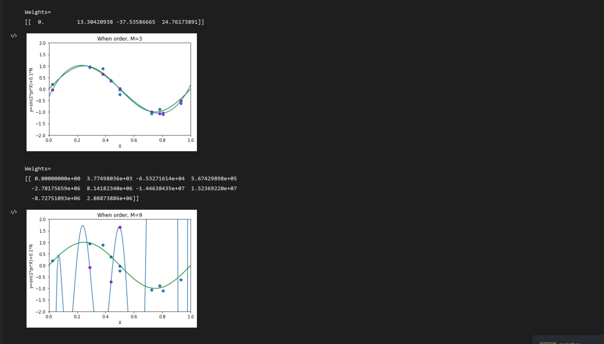
3.Now find out Train and Test error:
 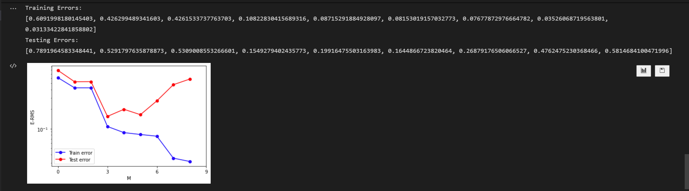
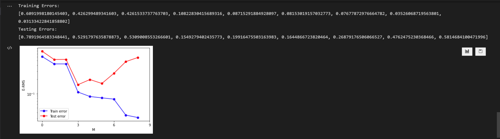
4. Ways to prevent overfitting:
1.Increasing the dataset.
2.Regularization.
1.Let's increase the dataset and plot it. Also let's split them into train and test datasets: 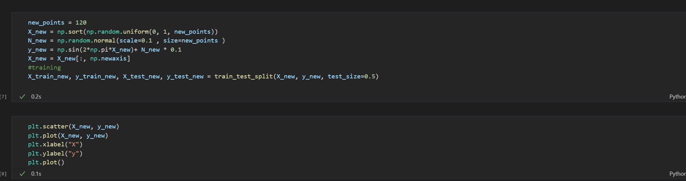 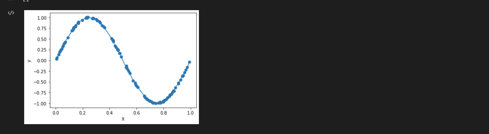 Now, let's fit, predict and plot: 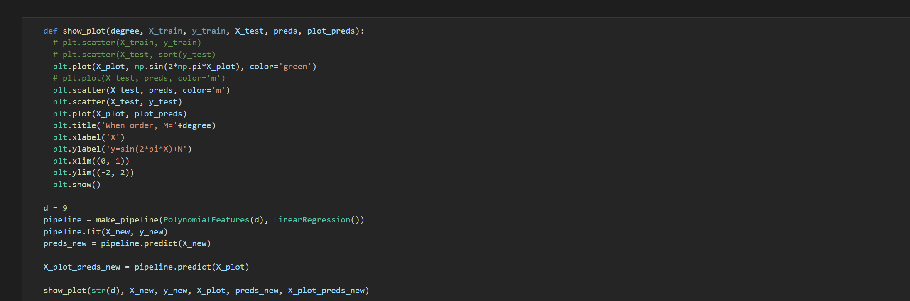 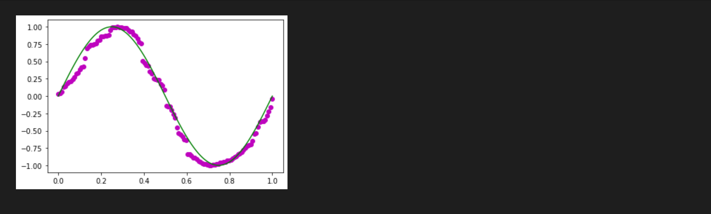 2. 2.Regularization: We'll be using L2 regularization, let's apply Regularisation and draw chart for lambda is 1, 1/10, 1/100, 1/1000, 1/10000, 1/100000: 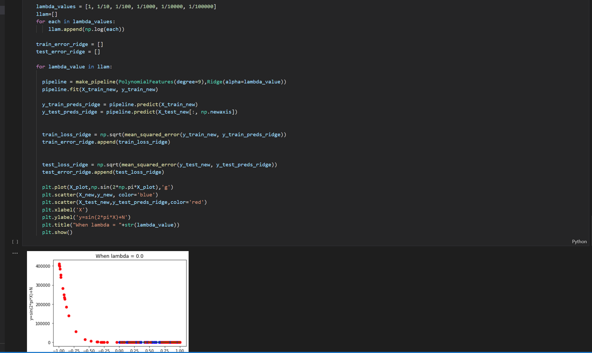 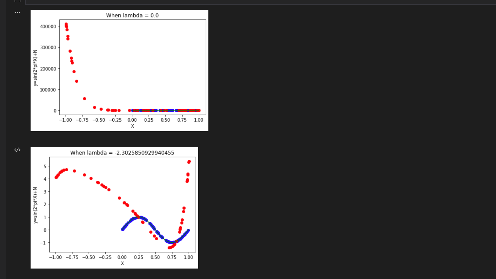 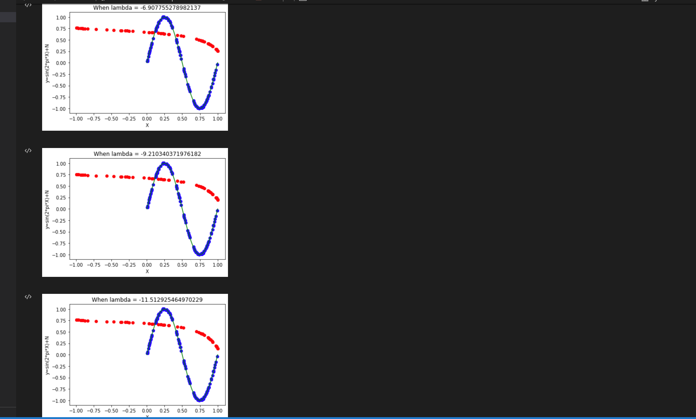 Let's plot train and test error: 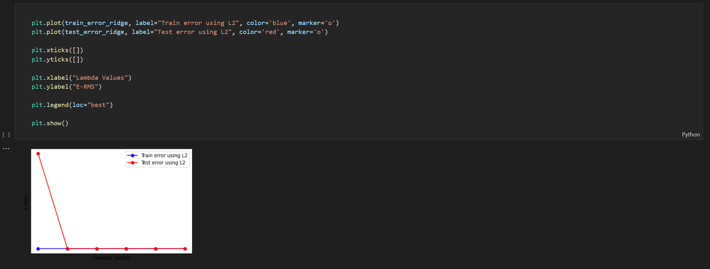Best Model: Considering all the train-test errors, lamda 1/100 is the best model.
Challenges and Contributions:
Had to go through a lot of videos, tutorials etc. Learned matplotlib and experimented a lots of different types of libraries and it's functions. Had gone through author bishop's book.
References
https://www.youtube.com/watch?v=4JQR9k2OXcw
https://jaythakur.medium.com/concept-of-overfitting-987b531bebda